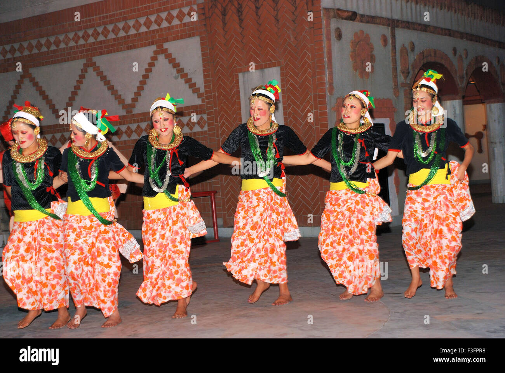

Culture
The People of Sikkim consist of three ethnic groups, that is, Lepcha, Bhutia and Nepali. Communities of different hues intermingle freely in Sikkim to constitute a homogenous blend. Hindu Temples coexist with Buddhist Monasteries, Churches, Mosque and Gurudwara. The predominant Communities are Lepchas, Bhutias and Nepalese. These myriad Cultures has produced a quintessential Sikkimese Culture that encompasses all ways and walk of life, but has also managed to preserve their own identity. These can also be seen in the various places of Worship, Festivals and Cultural dances that are celebrated through the year.
The native Sikkimese consist of the Bhutias, who migrated from the Kham district of Tibet in the 14th century, and the Lepchas, who are believed to have migrated from the Far East. Tibetans reside mostly in the northern and eastern reaches of the state. Migrant resident communities include Bengalis, Biharis and Marwaris,who are prominent in commerce in South Sikkim and Gangtok.

Language
The official languages of the state are English, Nepali, Sikkimese (Bhutia) and Lepcha. Additional official languages include Gurung, Limbu, Magar, Mukhia, Newari, Rai, Sherpa and Tamang for the purpose of preservation of culture and tradition in the state.
Nepali is the lingua franca of Sikkim, while Sikkimese (Bhutia) and Lepcha are spoken in certain areas. English is also spoken and understood in most of Sikkim. Other languages include Dzongkha, Groma, Hindi, Majhi, Majhwar, Thulung, Tibetan, and Yakha.
The major languages spoken as per census 2001 are Nepali (62.61%), Sikkimese (Bhutia) (7.73%), Hindi (6.67%), Lepcha (6.61%), Limbu (6.34%), Sherpa (2.57%), Tamang (1.87%) and Rai (1.64%).
Cuisines
The cuisine is a blend of Tibetan, Nepali and Lepcha dishes which comes from various ethnic tribes and communities of Sikkim. Sikkimese food is largely based on rice, culinary vegetables from jungle like Ningro (Fern), Nakima (Wild Lily), Baas ko Tusa (Bamboo-Shoot), Cheuw (Mushrooms), etc. Combining the local influences and the ones from the countries around, the Sikkim dishes are varied and made of a plethora of layers of flavors.
The Sikkim cuisine has major influences from Nepal and Tibet. The majority of the state has an ethnic Nepalese and Tibetan majority with the former overpowering the latter. Due to this reason, most of the people in the state are rice eaters. There are soups, dumplings, stews, meats, and a whole lot of vegetables in this amazing intermix of Sikkimese flavors. The state has plenty to offer for one to relish.